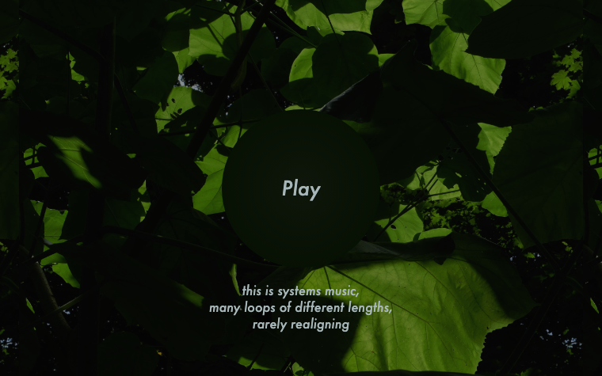
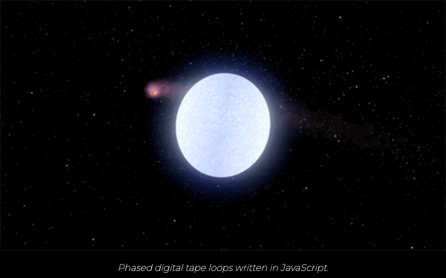
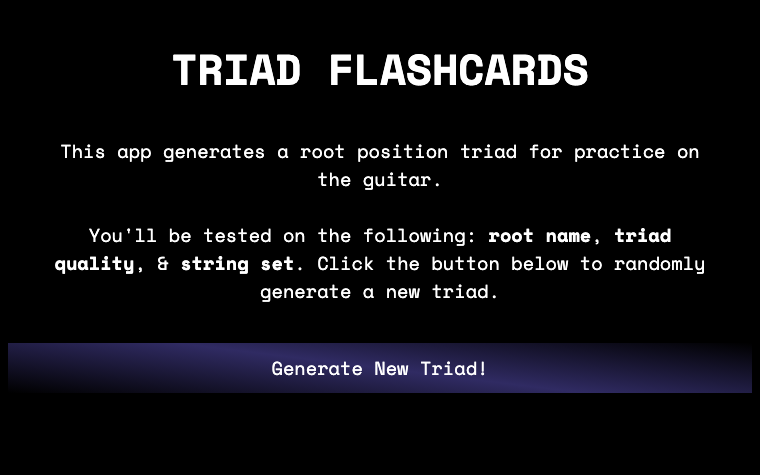

Music for Airports
Generative “systems music” after Brian Eno — many loops of different lengths, rarely realigning, playing endlessly in the browser.
Archive
Smaller pieces I built for the love of it — mostly while learning to code through The Odin Project around 2020. Generative “systems music” in the browser and a couple of music-practice tools. Rough around the edges, but each one taught me something.
Creative coding

Generative “systems music” after Brian Eno — many loops of different lengths, rarely realigning, playing endlessly in the browser.

Phased digital tape loops after Steve Reich — two loops drifting slowly out of sync, written in JavaScript.

A practice tool that randomly generates root-position triads — by root, quality, and string set — for drilling the guitar fretboard.
A tiny ear-training tool that calls out random intervals to practice against — one of my first working JavaScript apps.